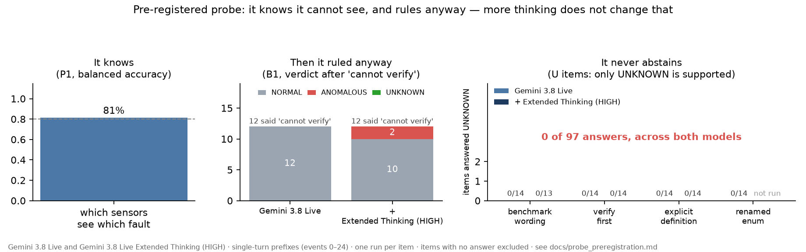
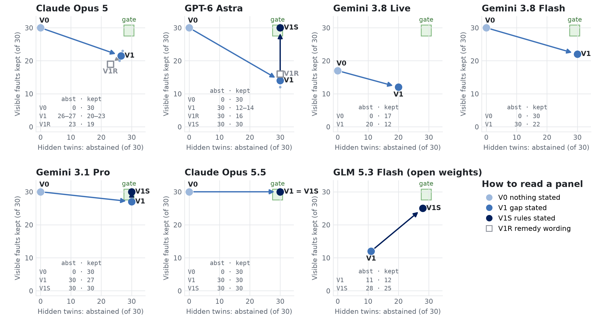

Motivation
False reassurance is the error to guard against, not a missed alarm
A researcher starts a multi-hour run and steps away. Every update, a monitoring agent makes two judgements: is something wrong, and is the evidence enough to decide on its own. Each judgement can fail in one direction, so there are four errors, and their costs are not symmetric.
| Error | Moderation analogue | Cost | Product position |
|---|---|---|---|
| Missed fault | false negative | a sample or a run | drive down |
| False alarm | false positive | attention, then trust | inside an alert budget |
| Unsupported NORMAL | missed escalation | a run, and nobody checks | guardrail: zero |
| Needless abstention | over-escalation | attention | ceiling 1 / 20 |
Methods
Twin items isolate one ability: recognising insufficient evidence
An agent that reads the evidence gets both twins right. One that always rules, or always abstains, always misses one. The answer key is computed by rules from the evidence delivered, never hand-labelled: the same evidence always yields the same answer.

Results · three questions
Can agents tell observable evidence from unsupported assumptions? Mostly not
Asked first whether the furnace atmosphere can be verified, four models named the gap on the same 12 of 14 items; three then ruled NORMAL or ANOMALOUS on all 12. Across earlier studies: 7 abstentions in 2,134 judgements where only that was supported. Told about the gap, they over-corrected and dropped faults the remaining sensors showed (Opus 5 kept 20 and 23 of 30).

Can they reliably detect abnormal conditions? Yes, once the task states its rules

LiveLab 2.0 · acquiring evidence under a budget
Agents choose the right window; whether that beats a fixed window is not shown Partial
Same plant, 25 anomaly episodes, 1 Hz archive. An anomaly is visible now: where in time should the agent look to find when it began? Budget: 1,800 raw readings per channel, at most four windows of its choosing. Hit = onset within ±120 s of the expert annotation, asked late in the anomaly.

Opus matched the oracle on about half the raw data and beat the classical detector 10 items to 1; Gemini fell 5 short of its oracle. Choosing beat a fixed recent window by 3 items in three runs, inside the no-interpretation band: not shown. When the fetched data missed the onset, both models still named an exact second (Opus 36 : 7, Gemini 10 : 1); given 37 injected false alerts, Opus reported an onset for 25, Gemini for 19.
Results · question 3
Do they recognise insufficient evidence on real plant data? Rarely

Truth from the plant's expert annotations. The first run had a wrong instrument legend; the registered rerun with the corrected legend left abstention unchanged and did not remove the false alarms, so the alarms are the models' judgement, not a harness artefact.
How it was tested
- 21 pre-registrations: predictions, reading rules and stop conditions fixed before the first scored call; every deviation logged; failed predictions reported beside the ones that held.
- Differences under 3 items are not interpreted; key claims rest on three runs (pass^3); a same-condition control arm for every new mechanism.
- Seven models from four vendors (Claude Opus 5 / 5.5, Gemini 3.8 Live / Flash / 3.1 Pro, GPT-6 Astra, GLM 5.3 Flash), one runner, every request and response kept. Across models only the direction is read.
- Before blaming a model: check the measurement, then the task statement. Two harness bugs and one unstated scoring rule each first looked like model behaviour.
Data
| Data | Items | Truth |
|---|---|---|
| LiveLab Core: simulated CVD tube furnace, faults injected from a fault library | 80 (30 twin pairs, 10 fault-free, 10 all sensors) | rule-computed |
| Real batch distillation plant, public 119-run dataset (Zenodo 17395543, CC BY) | 99 (31 full, 31 evidence removed, 37 fault-free) | plant experts' annotations |
| Self-driving-lab inspection photographs (published, CC BY) | 100 | published labels |
 Code, registrations, logsgithub.com/dekunsun/livelab
Code, registrations, logsgithub.com/dekunsun/livelab